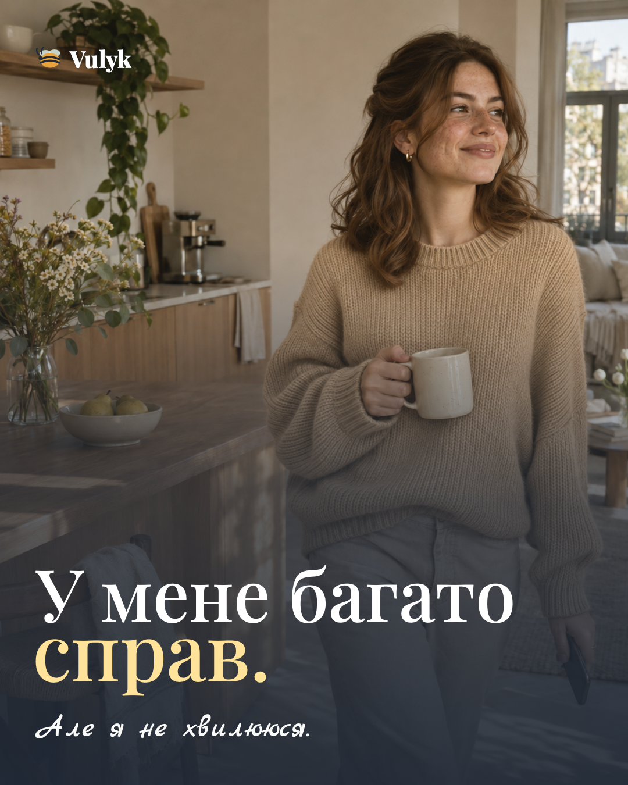
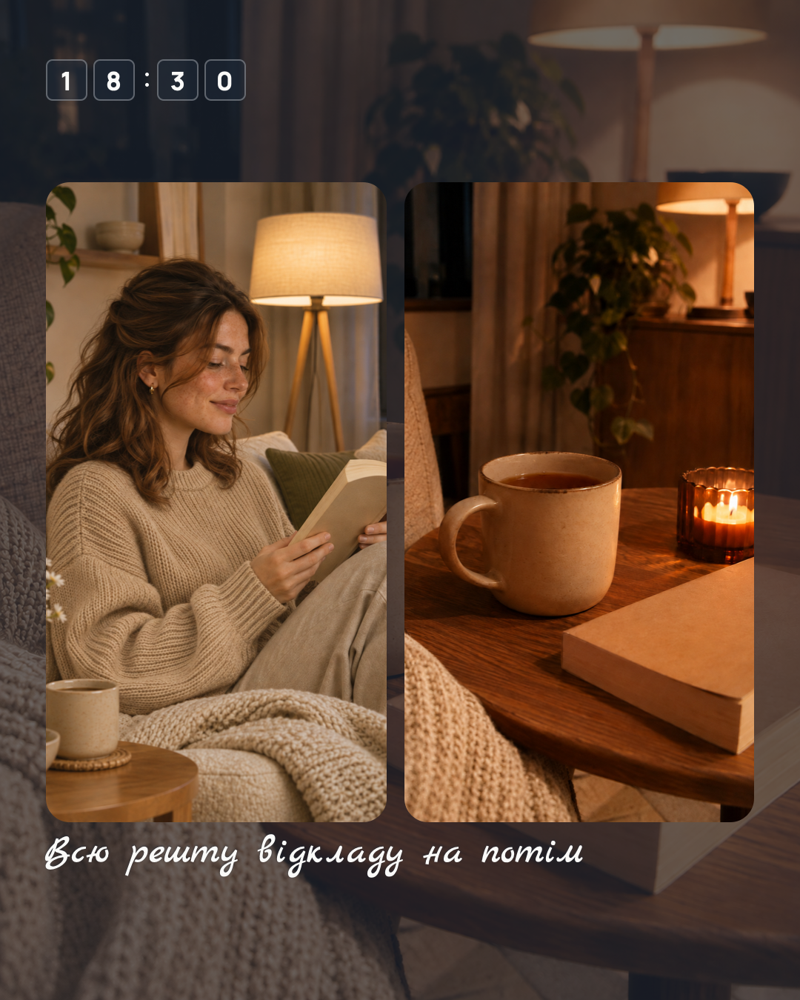
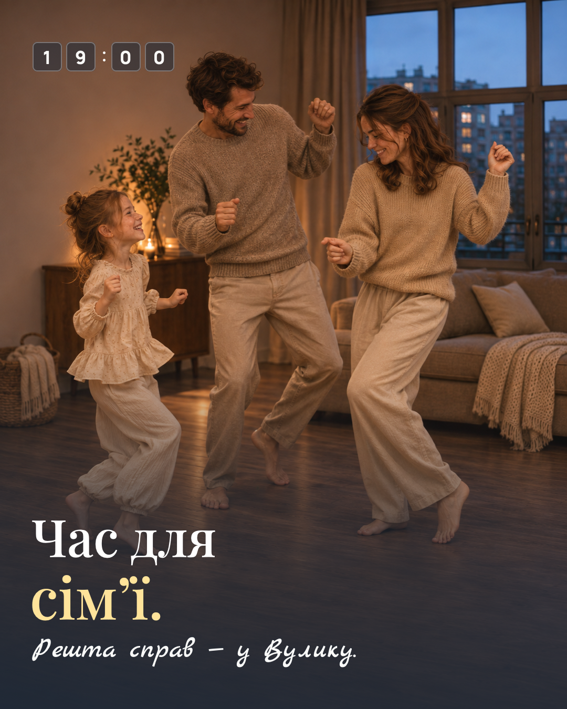
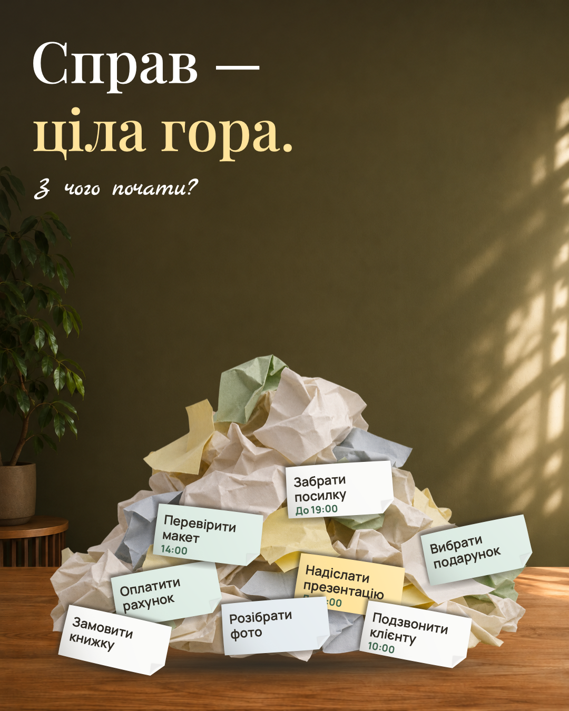

01 / Голосовий запис
Коли раптово згадуєш справу
«Розкидані справи» показують, як записи накопичуються в різних місцях. «Одна фраза. Дві задачі.» демонструє, як продиктувати справи одним записом і отримати окремі задачі.
Продиктуй робочі й особисті справи одним записом. Вулик розділяє їх на задачі й пропонує пріоритети, які можна змінити.
Спробувати Вулик ↗Вулик — голосовий планер, який перетворює одну фразу на окремі задачі.
Робочі й особисті справи згадуються протягом дня. Частина лишається в нотатках, частина — на стікерах, а деякі доводиться тримати в голові.
Мета кампанії. Показати, як зібрати ці справи голосом і створити перший список у Вулику.
Вулик орієнтований на зайнятих україномовних людей від 25 років із завантаженим графіком і високим рівнем відповідальності. Вони ведуть власний бізнес або відповідають за робочі проєкти, поєднують це з особистими справами й знаходять час для хобі.
Робочі й особисті справи часто згадуються раптово, посеред іншого заняття.
Що важливо в цей момент. Швидко зафіксувати те, що спало на думку. До пріоритетів можна повернутися пізніше.
Для Вулика я обрала сценарій із повсякденного життя. Людина говорить українською у своєму темпі й отримує список справ, який може переглянути й скоригувати.
Я побудувала кампанію навколо двох знайомих моментів.
«Розкидані справи» показують, як записи накопичуються в різних місцях. «Одна фраза. Дві задачі.» демонструє, як продиктувати справи одним записом і отримати окремі задачі.
У «Одному дні із Вуликом» і «Розкласти по поличках» Вулик пропонує пріоритети. Людина може їх скоригувати й вирішити, що зробити сьогодні, що запланувати на завтра, а що залишити на потім.
Я розробила три креативні сценарії для стрічки Instagram.
Для реклами ці сценарії можна адаптувати.
Ситуація. Записуєш справи там, де зручно в цей момент, а згодом шукаєш їх у різних місцях.
Квитки для мами, квартальний звіт і дашборд продажів з’являються на стікерах у трьох різних місцях. Фінальні слайди збирають записки разом і показують Вулик у руці героїні.
Ситуація. Кілька справ згадуються одночасно, коли незручно записувати кожну окремо.
Вулик відкривається після кліку по іконці. Оригінальна бджілка супроводжує голосовий запис, а дві задачі з’являються у вкладках «Сьогодні» й «Завтра».
Скажи все однією фразою. «Сьогодні купити молоко, а завтра о 15:00 — зустріч із клієнтом». Кожній справі свій час. «Купити молоко» · «Середній». «Зустріч із клієнтом» · «Високий» · «15:00». Одна фраза. Дві задачі. Vulyk. Згадала? Скажи Вулику.
Ситуація. Навіть коли найважливіше вже зроблено, незавершені справи можуть займати думки весь вечір.
У героїні багато справ. Вона починає з презентації, яку чекає клієнт, і оплачує рахунок. Решту переносить у «На потім», щоб провести вечір із сім’єю.

08:30. До 11:00 клієнт чекає презентацію. Це терміново. Вулик впорядковує п’ять справ: «Надіслати презентацію» · «До 11:00 · Високий пріоритет»; «Оплатити рахунок» · «Середній пріоритет»; «Розібрати фото»; «Замовити книжку»; «Вибрати подарунок».
10:48. Презентація у клієнта. До дедлайну ще 12 хвилин. «Надіслати презентацію» · «Виконано о 10:48».

18:45. Головне виконано. Можна видихнути. Презентацію виконано. Бджілка підлітає до рахунку, і статус змінюється з «До сплати» на «Виконано». Три інші записи переходять у «На потім».

Ситуація. Коли всі справи лежать в одній купі, важко побачити, за що взятися спочатку.
Гора записок поступово зникає зі столу. Бджілка Вулика приколює справи до трьох дерев’яних полиць — «Сьогодні», «Завтра» і «На потім». Так за кілька кадрів видно, як із купи справ складається план.

Бджілка створює полицю «Сьогодні» й приколює голочками три записки: «Надіслати презентацію» (до 11:00), «Оплатити рахунок» і «Забрати посилку» (до 19:00).
Бджілка створює полицю «Завтра» й приколює дві записки: «Подзвонити клієнту» (10:00) і «Перевірити макет» (14:00).
Бджілка заштовхує решту купи на полицю «На потім» і розвішує три записки: «Розібрати фото», «Вибрати подарунок» та «Замовити книжку».
Бджілка прилітає, з’являються білий напис Vulyk і фінальний текст.
Чи зрозуміла користь Вулика. Показати кожен креатив окремо людям із цільової аудиторії. Після перегляду попросити їх своїми словами пояснити, що робить Вулик і в якій ситуації він міг би їм знадобитися.
Метрики для реклами, якщо запускати кампанію.
Перше використання. Якщо в продукті відстежується ця подія, окремо подивитися, скільки людей зробили перший голосовий запис, з якого Вулик створив задачі.
У креативній роботі сформувала три гіпотези про те, як пояснити користь Вулика.
Можливий наступний крок — показати кожному учаснику з цільової аудиторії один креатив без пояснення. Попросити своїми словами описати, що робить Вулик, чим він корисний і як почати ним користуватися. За відповідями визначити, які моменти потребують уточнення.